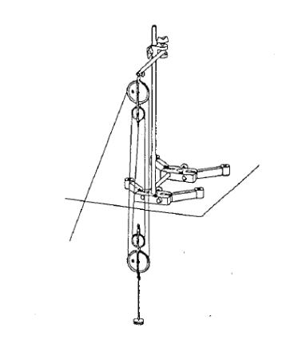

Bienvenidos al Curso de ???
Explora los conceptos fundamentales de la física a través de prácticas de laboratorio diseñadas para proporcionar una comprensión profunda de los principios físicos. Estas prácticas están orientadas a estudiantes y profesionales interesados en aplicar la teoría a través de experimentos y análisis detallados.
Introducción de la Segunda Ley de Newton
La Segunda Ley de Newton establece que la fuerza neta aplicada a un objeto es directamente proporcional a su masa y aceleración. Esta práctica explora la relación entre fuerza, masa y aceleración, incluyendo ejemplos prácticos como el diseño de vehículos. La guía de laboratorio cubre objetivos, equipos y procedimientos para aplicar esta ley fundamental de la física en contextos reales.
Introducción de Fuerzas en una Polea
La práctica de laboratorio sobre Fuerzas en el Soporte de una Polea proporciona una orientación detallada para entender los principios fundamentales de las poleas y su aplicación en la transmisión de fuerzas. A través de experimentos prácticos, se analizan las fuerzas que actúan en el soporte de una polea, considerando tanto la fuerza aplicada en la cuerda como las fuerzas de tensión. Este recurso es esencial para desarrollar habilidades en el análisis y resolución de problemas mecánicos.
Introducción de Rozamiento por Deslizamiento
Esta práctica introduce el fenómeno del rozamiento por deslizamiento, explorando cómo las irregularidades microscópicas de las superficies en contacto crean fricción. Se abordan el rozamiento estático y cinético, y se presentan métodos para determinar experimentalmente el coeficiente de rozamiento en superficies horizontales e inclinadas. El objetivo es analizar la relación entre el coeficiente de rozamiento, la fuerza normal y el peso del objeto deslizante.
Introducción de Presión Hidrostática
Explora el concepto de presión hidrostática, que se refiere a la presión ejercida por un fluido en reposo debido al peso de las columnas de líquido sobre él. La práctica incluye la medición de presión a diferentes profundidades y en distintas direcciones, utilizando un manómetro de tubo en U. Se abordan la relación entre presión, densidad del líquido y profundidad, y el principio de Arquímedes.
Introducción de Trabajo y Potencia
Esta práctica de laboratorio define el trabajo como la energía transferida al aplicar una fuerza y desplazar un objeto, y la potencia como la rapidez con la que se realiza el trabajo. Incluye actividades experimentales para medir fuerza, trabajo y potencia al elevar masas y utilizar poleas y polipastos, proporcionando una comprensión práctica de estos conceptos fundamentales.
Introducción de la Ley de Hooke
La Ley de Hooke describe la relación lineal entre la fuerza aplicada a un resorte y su deformación elástica. Esta práctica detalla el estudio de esta ley, incluyendo el cálculo del coeficiente de resorte, actividades prácticas para explorar sistemas de resortes y la determinación de la energía potencial elástica. Proporciona una guía completa para comprender y experimentar con la fuerza elástica.
SEGUNDA LEY DE NEWTON: LEY DE LA FUERZA
La Segunda Ley de Newton, también conocida como Ley de la Fuerza, es una de las leyes más importantes en la física, que nos brinda una comprensión profunda sobre cómo los objetos se mueven y cómo las fuerzas actúan sobre ellos. Esta ley fue formulada por el célebre científico Sir Isaac Newton en el siglo XVII y representa un hito clave en la historia de la ciencia. Gracias a estudios y experimentos, Newton fue capaz de revelar los principios fundamentales que rigen el movimiento de los cuerpos, sentando las bases de la física moderna.
La Segunda Ley de Newton ha sido constantemente aplicada y probada, y su validez se ha confirmado una y otra vez en distintas situaciones y fenómenos naturales. Con su comprensión, podemos desvelar los secretos detrás de la aceleración, la fuerza y la interacción entre los objetos, lo que nos permite analizar y predecir el comportamiento de los sistemas en movimiento. En esta guía, exploraremos de manera clara y fascinante los conceptos esenciales de esta ley, facilitando su comprensión a estudiantes, presentando diversas formas de exponer y demostrar estos principios. ¡Comencemos con el fascinante mundo de las leyes de Newton y descubrir el poder de la fuerza!
La Segunda Ley de Newton establece que la fuerza neta aplicada a un objeto es directamente proporcional a la masa del objeto y a su aceleración. Matemáticamente, se expresa de la siguiente manera:
Fuerza neta (\( F \)) = masa (\( m \)) \(\times\) aceleración (\( a \))
Esto significa que, si aplicamos una fuerza mayor a un objeto, este experimentará una aceleración mayor. Del mismo modo, si la masa del objeto es mayor, su aceleración será menor para una fuerza dada.
Sin embargo, es importante destacar que la fuerza neta no es simplemente una fuerza individual, sino la suma de todas las fuerzas que actúan sobre el objeto. En situaciones donde varias fuerzas actúan simultáneamente, utilizamos el símbolo de sumatoria (∑) para representar la suma de todas las fuerzas. Por lo tanto, la ecuación de la Segunda Ley de Newton se puede expresar de la siguiente manera:
\[ \sum F = m \cdot a \]
Donde ∑F representa la sumatoria de todas las fuerzas, m es la masa del objeto y a es su aceleración. Esta sumatoria nos permite tener en cuenta todas las fuerzas que interactúan con el objeto y determinar su efecto combinado en el movimiento.
Relación Fuerza-Aceleración y Masa-Aceleración
La ecuación (F = m * a) nos muestra la relación entre la fuerza, la masa y la aceleración. Si aplicamos una fuerza constante a un objeto de masa constante, su aceleración será proporcional a la fuerza aplicada. Esto significa que una mayor fuerza resultará en una mayor aceleración, y viceversa.
Por otro lado, si mantenemos una fuerza constante y aumentamos la masa del objeto, su aceleración disminuirá. Esto se debe a que una mayor masa requiere una fuerza mayor para lograr la misma aceleración.
Aplicaciones de la Segunda Ley de Newton
La Segunda Ley de Newton tiene numerosas aplicaciones prácticas en nuestro mundo. Es fundamental para entender el movimiento de objetos en diversas situaciones, como el diseño de vehículos, el análisis de movimientos deportivos, la predicción de trayectorias de proyectiles y mucho más.
Por ejemplo, al diseñar un automóvil, se deben considerar las fuerzas ejercidas sobre él, como la resistencia del aire y la fricción de los neumáticos. Utilizando la Segunda Ley de Newton, los ingenieros pueden determinar la fuerza necesaria para acelerar el automóvil y la velocidad máxima que puede alcanzar.
Ejemplo práctico:
Supongamos que tenemos un automóvil con una masa de 1000 kg y deseamos determinar la fuerza necesaria para acelerarlo a una tasa de 5 m/s². Utilizaremos la fórmula de la Segunda Ley de Newton:
\[ F = m \cdot a \]
Donde:
- \( F \) = es la fuerza neta aplicada al automóvil (lo que queremos calcular).
- \( m \) = es la masa del automóvil (1000 kg en este caso).
- \( a \) = es la aceleración deseada (5 m/s² en este caso).
Sustituyendo los valores en la fórmula, tenemos:
\( F_{\text{neta}} = 1000 \, \text{kg} \cdot 5 \, \text{m/s}^2 \)
Calculando el producto de la masa por la aceleración, obtenemos:
\( F_{\text{neta}} = 5000 \, \text{kg} \cdot \text{m/s}^2 \)
Por lo tanto, la fuerza neta necesaria para acelerar el automóvil a una tasa de 5 m/s² es de 5000 N (newtons).
Observaciones:
Es importante destacar que este cálculo representa la fuerza neta requerida para vencer las fuerzas de resistencia y fricción y lograr la aceleración deseada. En la práctica, pueden existir otros factores a considerar, como el rendimiento del motor y la eficiencia de transmisión, que podrían afectar la fuerza real aplicada al automóvil. Sin embargo, la Segunda Ley de Newton proporciona una base teórica para comprender cómo la fuerza, la masa y la aceleración se relacionan en el movimiento de un objeto.
Aspectos importantes para tener en cuenta
- Unidad de medida: Newton (N). La fuerza se mide en una unidad llamada newton (N), en honor a Sir Isaac Newton. El newton es una unidad derivada en el Sistema Internacional de Unidades (SI) y se define como la fuerza necesaria para acelerar una masa de 1 kilogramo a una tasa de 1 metro por segundo al cuadrado. Esta unidad nos permite cuantificar y comparar la magnitud de las fuerzas aplicadas a los objetos.
- Tamaño y dirección de las fuerzas. Las fuerzas pueden tener diferentes magnitudes y direcciones. Al aplicar la Segunda Ley de Newton, es importante considerar tanto la magnitud de la fuerza como su dirección. Por ejemplo, una fuerza de 10 N aplicada hacia la derecha tendrá un efecto diferente en un objeto en comparación con una fuerza de 10 N aplicada hacia la izquierda.
- Fuerzas equilibradas y desequilibradas. La Segunda Ley de Newton es fundamental para comprender el movimiento de los objetos en nuestro entorno. Nos permite analizar y predecir cómo los objetos responderán a las fuerzas aplicadas sobre ellos. Esta ley es aplicable a numerosas situaciones de la vida cotidiana, como el funcionamiento de vehículos, la caída de objetos, los deportes y muchas otras actividades en las que interactuamos con fuerzas.
Objetivos
- Comprender la relación entre la fuerza neta, la masa y la aceleración de un objeto a través de la aplicación de la Segunda Ley de Newton.
- Aplicar la ley de la fuerza en situaciones reales para analizar y predecir el movimiento de objetos en función de las fuerzas que actúan sobre ellos.
Equipos: Materiales e Insumos
Carril

Aerodeslizador

Arrancador mecánico
Barrera fotoeléctrica contadora

Pesas

Material de montaje
Polea
Desarrollo Experimental
Experimento:
Determinación de la relación entre la fuerza aplicada y la aceleración de un carrito
Descripción:
En este experimento, vamos a investigar la relación entre la fuerza aplicada y la aceleración de un carrito utilizando un carril, un sensor de movimiento y un dinamómetro. Vamos a medir la aceleración del carrito cuando se le aplica una fuerza constante y comprobar si cumple con la Segunda Ley de Newton.
Procedimiento:
- Preparación del equipo: Coloca el carril en una superficie plana y asegúrate de que esté nivelado. Conecta el sensor de movimiento a un sistema de adquisición de datos para registrar la aceleración del carrito.
- Medición de la masa del carrito: Utiliza una balanza para medir la masa del carrito y anota el valor en tus registros. Esta masa permanecerá constante durante el experimento.
- Aplicación de la fuerza: Conecta el dinamómetro al carrito y aplica una fuerza constante. Registra el valor de la fuerza aplicada y anota el valor en tus registros.
- Medición de la aceleración: Libera el carrito y deja que se mueva a lo largo del carril. El sensor de movimiento registrará la aceleración del carrito en función del tiempo. Anota los valores de aceleración en tus registros.
- Repetición del experimento: Repite el experimento varias veces, aplicando diferentes magnitudes de fuerza al carrito. Registra los valores de la fuerza aplicada y la aceleración correspondiente en cada caso.
Resultados y análisis:
Registra los datos obtenidos en una tabla que incluya las columnas de fuerza aplicada, masa del carrito y aceleración. Calcula el promedio de la aceleración para cada valor de fuerza aplicada y compara los resultados con la predicción teórica de la Segunda Ley de Newton.
El análisis de los datos te permitirá determinar si existe una relación lineal entre la fuerza aplicada y la aceleración del carrito, confirmando así la validez de la Segunda Ley de Newton. Además, podrás calcular la constante de proporcionalidad, que corresponde a la masa del carrito, y verificar si se mantiene constante en todas las mediciones.
PROCEDIMIENTO / ACTIVIDADES POR DESARROLLAR
EXPERIMENTO CON CARRIL Y AERODESLIZADOR
Disponga horizontalmente el carril perfectamente nivelado y junto a él, los sensores para medir el tiempo. Mida la distancia que hay entre los sensores.
Acoplar el aerodeslizador a una pesa con un hilo, pasar por la polea. El móvil deberá moverse a partir del reposo, arrastrado por la pesa que desciende.
Los sensores medirán el tiempo que tarda en recorrer la distancia entre los mismos, de donde se podrá obtener la velocidad y la aceleración del movimiento.
Dispuesto el aerodeslizador al extremo de un sensor, active la señal de tiempo en el contador al mismo tiempo que el aire dentro del carril. Suelte el arrancador y el aerodeslizador se moverá. Este movimiento es registrado por el contador. Los datos seleccionados deberán ser tabulados.
Manteniendo la masa del aerodeslizador y la distancia que recorre constantes, varíe la fuerza que produce el movimiento en las razones uno, dos, tres, cuatro y cinco. Registre en cada caso la aceleración del móvil y la fuerza neta.
Con la misma disposición anterior, manteniendo constante la fuerza que produce el movimiento y la distancia recorrida por el aerodeslizador, varíe la masa del mismo incrementándole en las razones uno, dos, tres, cuatro y cinco o con masas proporcionales. Registre nuevamente la aceleración del mismo y la masa del patín bajo estas condiciones.
Llenar la hoja técnica de datos del procedimiento 5 y 6.
Montaje
Imagen 1: Vista del carrito con los pesos correspondientes en la pista

Imagen 2: Peso de m2 actuando sobre m1
.png)
Quiz 1
TEMA DE LA PRÁCTICA: FUERZAS EN EL SOPORTE DE UNA POLEA
Una polea es una máquina simple que se utiliza para transmitir y modificar la dirección de una fuerza. Además, cuando se combinan en conjuntos como aparejos o polipastos, también permiten reducir la magnitud de la fuerza necesaria para levantar un peso.
La polea actúa como un punto de apoyo para una cuerda que se enrolla parcialmente alrededor de ella. La polea simple se puede entender como una palanca de primer grado, en la cual tanto la fuerza (F) como la resistencia (R) se aplican a la misma distancia del eje, que coincide con el radio de la polea. En un extremo se encuentra la resistencia (R), y en el otro extremo se aplica la fuerza actuante (F) o potencia.
Es importante comprender las fuerzas que actúan en el soporte de una polea. Además de la fuerza aplicada en el extremo de la cuerda, también existen fuerzas de tensión en la cuerda misma y en el soporte de la polea. Estas fuerzas deben ser consideradas para garantizar la estabilidad y el funcionamiento adecuado de la polea.
Además, es esencial tener en cuenta que las poleas pueden tener diferentes configuraciones, como poleas fijas o móviles, y que cada una puede tener impacto en las fuerzas involucradas en el sistema. Por lo tanto, es importante considerar todos estos aspectos al analizar las fuerzas en el soporte de una polea.
Fórmulas Descripción
- W = m * g: Peso en un objeto, donde m es la masa y g es la aceleración debida a la gravedad.
- F = R: Relación entre la fuerza aplicada y la resistencia en una polea simple.
- F = R / n: Relación entre la fuerza aplicada y la resistencia en un sistema de poleas móviles, donde n es el número de segmentos de cuerda.
- T = F / n: Fuerza de tensión en la cuerda conectada a una polea, donde T es la fuerza de tensión y n es el número de segmentos de cuerda.
- Fg = 𝑇₁² + 𝑇₂² + 𝑇₃² + ... + 𝑇ₙ²: Relación entre las tensiones en una configuración de poleas móviles según la ley de las poleas, donde T₁, T₂, T₃, ..., Tₙ son las tensiones en cada segmento de cuerda y F es la fuerza aplicada.
Objetivos
- Comprender los principios fundamentales de las poleas y su aplicación en la transmisión y modificación de fuerzas.
- Analizar las fuerzas que actúan en el soporte de una polea, considerando tanto la fuerza aplicada en el extremo de la cuerda como las fuerzas de tensión en la cuerda misma y en el soporte de la polea.
- Aplicar las fórmulas relevantes para calcular y predecir las fuerzas en el soporte de una polea. Esto incluye utilizar la fórmula del peso para determinar la fuerza gravitacional en un objeto.
Equipos
Pie Estativo
Varilla Soporte 600mm

Varilla Soporte con Orificio 100mm

Nuez Doble

Dinamómetro 1N

Dinamómetro 2N

Soporte para Dinamómetros

Platillo para Pesas de Ranura 10g
Pesa de Ranura 10g
Polea
Sedal

Tijera

Disco Graduado
ACTIVIDADES POR DESARROLLAR:
Montaje
- Ajusta los dinamómetros antes de cada medición, en posición de uso.
- Cuelga la polea del dinamómetro de 1N.
- Fija el dinamómetro 1N con el soporte para dinamómetros en la varilla soporte de la derecha, arriba del todo.
- El dinamómetro 2N, con el soporte para dinamómetros, a la varilla soporte de la izquierda, en posición horizontal (fig.1).
- Ata el dinamómetro 2N con un trozo de sedal al platillo para pesas de ranura.
Realización
Carga el platillo para pesas de ranura con tres masas (mtot = 40g), y desplaza el dinamómetro 2N hasta que esté exactamente horizontal (fig.1).
- La masa debe colgar libremente.
- Lee los dos dinamómetros y anota los valores de la fuerza desplazada F1 y de la resultante Fr en la polea (α = 90°).
Varía el ángulo α entre la fuerza por peso Fg y F1 desplazando el soporte del dinamómetro 2N primero totalmente arriba, y después completamente abajo.
- Pon, aproximadamente, los ángulos dados en la siguiente tabla.
- Para ello, coloca el disco graduado de forma que su centro se encuentra en la intersección de los ejes de las fuerzas.
Lee en cada una de las posiciones, es decir para cada ángulo α, las fuerzas Fr y F1, y anota los valores en la tabla.
- Quita el dinamómetro 2N del soporte, y tira de él hacia abajo paralelamente a Fg (α = 0°). Anota también estos valores.
Para la realización de los experimentos se debe diseñar el modelo tal y como se muestra en las Figuras 1 y 2. Tomando en cuenta utilizar los materiales descritos anteriormente.
Figura 1. Modelo
Figura 2. Modelo
En la Figura 3, se observará una representación visual de los materiales previamente mencionados, los cuales serán utilizados para la construcción del modelo.
Figura 3. Materiales a emplear
Para conseguir ensamblar la estructura, se requerirá la disposición de los "pies estativos" como fundamento principal. Sobre estos, se conectará una varilla de 100 mm de longitud en posición horizontal, seguida por dos varillas verticales de 600 mm. Esta disposición puede observarse en las Figuras 4, 5 y 6.
Figura 4. Base con los pies estativos y varilla de 100 mm
Figura 5. Varilla 600 mm
Figura 6. Varilla 600 mm
Una vez que la base esté preparada, se utilizará la nuez doble en tres variantes distintas, cada una con su propia forma de aplicación, como se muestra en las Figuras 7, 8 y 9. Estas variantes serán de utilidad para llevar a cabo el siguiente paso.
Figura 7. Nuez doble tipo 1
Figura 8. Nuez doble tipo 2
Figura 9. Nuez doble tipo 3
Cuando se cuente con la presencia de la nuez doble en las ubicaciones mencionadas en el modelo, se procederá a instalar un dinamómetro de 2 N en el extremo izquierdo y un dinamómetro de 1 N en el extremo derecho, de acuerdo a lo ilustrado en las Figuras 10 y 11. Es importante destacar que dicho dinamómetro estará conectado a la nuez doble de tipo 3, tal como se describe en la Figura 9.
Figura 10. Dinamómetro 2N
Figura 11. Dinamómetro 1N
Se localizará en el dinamómetro de 1 N y se conectará una polea de 40 mm. Usando un sedal, se colocará un plato para pesas en la polea y se añadirá una pesa de ranura de 10g en él. Es importante destacar que cada dinamómetro se conectará a cada extremo de la polea, como se muestra en las Figuras 12 y 13.
Figura 12. Polea
Figura 13. Plato de pesas
Finalmente, se contará con la siguiente estructura, de acuerdo con lo que se puede apreciar en la Figura 14 que se presenta a continuación.
Figura 14. Modelo realizado
Quiz 2
Fuerza de Rozamiento por Deslizamiento
El rozamiento por deslizamiento es un fenómeno físico que se presenta cuando dos superficies en contacto se deslizan una sobre la otra. En la naturaleza, el rozamiento por deslizamiento está presente en numerosos aspectos de nuestra vida cotidiana y desempeña un papel crucial en diversos campos científicos y tecnológicos. Comprender este fenómeno resulta fundamental para el análisis de movimientos, el diseño de máquinas y la optimización de procesos.
Cuando un objeto se desliza sobre una superficie, se generan fuerzas de rozamiento que se oponen al movimiento relativo de las dos superficies. Estas fuerzas surgen debido a la interacción entre las irregularidades microscópicas presentes en las superficies en contacto. Aunque a simple vista las superficies puedan parecer suaves, en realidad están compuestas por asperezas y rugosidades que se entrelazan, generando una resistencia al deslizamiento.
El estudio del rozamiento por deslizamiento implica considerar dos tipos de fuerzas de rozamiento: el rozamiento estático y el rozamiento cinético. El rozamiento estático actúa cuando un objeto está en reposo y se opone a su movimiento inicial. Una vez que el objeto comienza a deslizarse, entra en juego el rozamiento cinético, que es la fuerza de rozamiento que actúa mientras el objeto está en movimiento.
Es importante mencionar que las fuerzas de rozamiento por deslizamiento dependen de varios factores, como la naturaleza de las superficies en contacto, la fuerza normal (la fuerza que mantiene en contacto a los objetos) y las propiedades del medio en el que se lleva a cabo el deslizamiento. Además, el coeficiente de rozamiento, que es una propiedad característica de cada par de superficies, desempeña un papel fundamental en el cálculo de las fuerzas de rozamiento.
La fuerza de rozamiento entre dos cuerpos no está determinada por el tamaño de la superficie de contacto, sino por las propiedades y la rugosidad de dicha superficie. En otras palabras, depende de los materiales que conforman la superficie y de su grado de aspereza.
La magnitud de la fuerza de rozamiento entre dos cuerpos en contacto es proporcional a la fuerza normal que actúa entre ellos. Esta relación puede expresarse mediante la fórmula:
Fr = μ · N
Donde Fr representa la fuerza de rozamiento, μ es el coeficiente de rozamiento y N es la fuerza normal.
Imagen 1: Ilustración de cromatografía de papel
Nota: El coeficiente de rozamiento es una medida de la resistencia al deslizamiento entre dos superficies en contacto y varía según la naturaleza de los materiales involucrados. Puede determinarse experimentalmente y se utiliza para calcular la fuerza de rozamiento en función de la fuerza normal.
Fuerza de Rozamiento Estático
También existe una fuerza de rozamiento entre dos objetos que no están en movimiento relativo.
Imagen 1: Ilustración de cromatografía de papel
Observando la figura, podemos notar que a medida que aumentamos gradualmente la fuerza F aplicada sobre el bloque, este permanece en reposo. Esto se debe a que la aceleración del bloque es cero, lo que implica que la fuerza aplicada es igual en magnitud y opuesta a la fuerza de rozamiento Fs.
F = Fs
El valor máximo de la fuerza de rozamiento, Fs máx, se alcanza cuando el bloque está a punto de comenzar a deslizar. En este punto crítico, la fuerza de rozamiento es máxima y se puede calcular utilizando la siguiente fórmula:
Fs máx = μs · N
Donde μs es el coeficiente de rozamiento estático y N es la fuerza normal entre las superficies en contacto.
El coeficiente de rozamiento estático, representado por μs, es una constante de proporcionalidad que depende de las condiciones de preparación y de la naturaleza de las dos superficies en contacto. Es importante destacar que este coeficiente es casi independiente del área de la superficie de contacto.
Método para Encontrar el Coeficiente de Rozamiento en una Superficie Horizontal
El método para encontrar el coeficiente de rozamiento en una superficie horizontal utilizando la teoría de Newton se basa en alcanzar el punto de inminente deslizamiento y relacionar la fuerza de rozamiento con la fuerza normal. El procedimiento sería el siguiente:
- Configuración experimental: Coloca un objeto, como un bloque, sobre una superficie horizontal lisa.
- Medición de la fuerza normal: Utiliza una balanza o un dispositivo de medición adecuado para medir la fuerza normal (N), que es la fuerza perpendicular ejercida por la superficie sobre el objeto.
- Aplicación de una fuerza externa: Aplica una fuerza gradualmente al objeto, como empujarlo suavemente con una fuerza (F), en la dirección del movimiento deseado (horizontal).
- Observación del objeto: Observa cuidadosamente el objeto mientras aplicas la fuerza. Aumenta gradualmente la magnitud de la fuerza aplicada hasta que el objeto esté a punto de deslizar, es decir, cuando la fuerza aplicada sea igual a la fuerza de rozamiento (F_r).
- Medición de la fuerza de rozamiento: En el punto en el que el objeto está a punto de deslizar, mide la fuerza aplicada (F) con una balanza o un dispositivo de medición adecuado. Esta será igual a la fuerza de rozamiento (F_r).
- Cálculo del coeficiente de rozamiento cinético: Utilizando la fórmula μk = F_r / N, donde μk es el coeficiente de rozamiento cinético, F_r es la fuerza de rozamiento y N es la fuerza normal, puedes calcular el coeficiente de rozamiento.
Este método se basa en la idea de que cuando el objeto está a punto de deslizar, la fuerza de rozamiento es igual a la fuerza aplicada. Al relacionar la fuerza de rozamiento con la fuerza normal, obtienes el coeficiente de rozamiento cinético, que caracteriza la resistencia al deslizamiento entre las dos superficies en contacto.
Nota: Recuerda que es importante realizar múltiples mediciones y promediar los resultados para obtener un valor más preciso del coeficiente de rozamiento. Además, ten en cuenta que el coeficiente de rozamiento puede variar según las propiedades de las superficies en contacto y las condiciones específicas del experimento.
Método para Encontrar el Coeficiente de Rozamiento en una Superficie Inclinada
El método para encontrar el coeficiente de rozamiento en una superficie inclinada cuando un cuerpo se mueve hacia abajo y está en estado inminente de movimiento se basa en la aplicación de la teoría de Newton. A continuación, se describe el procedimiento paso a paso:
- Configuración experimental: Coloca una superficie inclinada y coloca un objeto sobre ella.
- Medición de la fuerza normal: Utiliza una balanza o un dispositivo de medición adecuado para medir la fuerza normal, que es el componente de la fuerza gravitatoria que actúa perpendicularmente a la superficie inclinada. La fuerza normal se calcula como N = m · g · cos(θ), donde m es la masa del objeto, g es la aceleración debida a la gravedad y θ es el ángulo de inclinación de la superficie.
- Determinación de la fuerza gravitatoria: La fuerza gravitatoria que actúa sobre el objeto se calcula como Fg = m · g, donde m es la masa del objeto y g es la aceleración debida a la gravedad.
- Medición de la fuerza de rozamiento: Aplica una fuerza externa suavemente hacia abajo en la dirección de la superficie inclinada y aumenta gradualmente su magnitud hasta que el objeto esté a punto de comenzar a deslizar. En este punto, la fuerza de rozamiento dinámica, denotada como Fr, es igual en magnitud y opuesta a la fuerza externa aplicada.
- Cálculo del coeficiente de rozamiento cinético: Utiliza la fórmula del coeficiente de rozamiento cinético (μk = Fr / N) para calcular el coeficiente de rozamiento cinético. Donde Fr es la fuerza de rozamiento medida en el paso 4 y N es la fuerza normal obtenida en el paso 2.
Equipos
Rampa
Dinamómetro
Dinamómetro 1N
Regla Graduada
Graduador
PROCEDIMIENTO / ACTIVIDADES POR DESARROLLAR:
Montaje: Monta el experimento según la figura.
Plano Horizontal:
- Determina el peso del cuerpo de prueba.
- Coloca el cuerpo de prueba sobre la superficie de la mesa y conéctalo al dinamómetro. Hale este con movimiento uniforme hasta que se rompa el estado de equilibrio, mide el valor del dinamómetro y colócalo en la tabla de resultados. (Repite esta operación 5 veces y coloca el valor promedio).
- Aumenta el peso del cuerpo, mediante masas sobre él (50 g, 100 g, 150 g, y 200 g) y efectúa el paso anterior.
- Recuerda que el dinamómetro debe estar encerado en esta disposición.
Plano Inclinado con el cuerpo de prueba descendiendo:
- Coloca el cuerpo de prueba en la parte superior del plano inclinado y lentamente aumenta la inclinación de este, hasta que aquel comience libremente a deslizarse.
- Determina, luego de 5 medidas, la inclinación media y coloca el valor en la Tabla de resultados.
- Repite esta operación aumentando la masa del cuerpo (50 g, 100 g, 150 g, 200 g).
Plano Inclinado con el cuerpo de prueba ascendiendo:
- Acopla el cuerpo de prueba al dinamómetro previamente encerado.
- Aplica una fuerza progresiva hasta que el movimiento del cuerpo sea inminente. Repite esta operación diez veces.
- Efectúa este proceso para inclinaciones de 0°, 5°, 15°, 30° y 45°.
Anota los datos en la hoja técnica.
Quiz 3
Fundamentación Teórica: Hidrostática
La hidrostática estudia los líquidos en reposo, que se diferencian de los gases en el coeficiente de comprensibilidad; la presión varía, disminuyendo con la altura y aumentando con la profundidad. Un fluido pesa y ejerce presión sobre las paredes, el fondo del recipiente que lo contiene y sobre la superficie de cualquier objeto sumergido en él. Esta presión, llamada presión hidrostática, provoca, en fluidos en reposo, una fuerza perpendicular a las paredes del recipiente o a la superficie del objeto sumergido, sin importar la orientación que adopten las caras. Si el líquido fluyera, las fuerzas resultantes de las presiones ya no serían necesariamente perpendiculares a las superficies.
Esta presión depende de la densidad del líquido en cuestión y de la altura a la que esté sumergido el cuerpo, y se calcula mediante la siguiente expresión:
Presión (\( P \)) = densidad (\( \rho \)) \(\times\) gravedad (\( g \)) \(\times\) altura (\( h \)) + presión atmosférica (\( P_0 \))
Un fluido ejerce presión sobre las paredes y el fondo del recipiente que lo contiene, así como sobre la superficie de cualquier objeto sumergido. Esta presión, llamada presión hidrostática, provoca una fuerza perpendicular a las paredes del recipiente o a la superficie del objeto sumergido en fluidos en reposo. Si el líquido fluyera, las fuerzas resultantes de las presiones no serían necesariamente perpendiculares a las superficies.
El principio de Arquímedes establece que la inmensa mayoría de los materiales en la Tierra se encuentran en estado fluido, ya sea en forma de líquidos o gases. Por ello, el estudio de las presiones y propiedades hidrostáticas e hidrodinámicas tiene gran valor en el conocimiento del planeta.
Los Fluidos
Se denomina fluido a toda sustancia que tiene capacidad de fluir. En esta categoría se incluyen los líquidos y los gases, que se diferencian entre sí por el valor de su densidad, siendo mayor en los líquidos. La densidad se define como el cociente entre la masa de un cuerpo y el volumen que ocupa:
Densidad (\( \rho \)) = masa (\( m \)) / volumen (\( V \))
La densidad es un valor escalar y sus unidades son kg/m³ en el Sistema Internacional.
Propiedades de los Fluidos
Los gases y los líquidos comparten algunas propiedades comunes, pero también presentan diferencias notables:
- Los gases tienden a ocupar todo el volumen del recipiente que los contiene, mientras que los líquidos adoptan la forma del recipiente sin ocupar la totalidad del volumen.
- Los gases son compresibles, por lo que su volumen y densidad varían según la presión; los líquidos tienen volumen y densidad constantes para una cierta temperatura (son incompresibles).
- Las moléculas de los gases no interaccionan físicamente entre sí, a diferencia de las moléculas de los líquidos; el principal efecto de esta interacción es la viscosidad.
Presión Hidrostática
La presión hidrostática es un concepto fundamental en física y se refiere a la presión ejercida por un fluido en reposo debido al peso de las columnas de líquido sobre él. Esta presión depende tanto de la profundidad como de la densidad del líquido. Por lo tanto, se establece que la presión hidrostática es directamente proporcional a la densidad del líquido y a la profundidad a la que está sumergido el objeto. La fórmula para calcular la presión hidrostática es:
Presión hidrostática (\( P \)) = densidad (\( \rho \)) \(\times\) gravedad (\( g \)) \(\times\) altura (\( h \))
La diferencia de presión entre dos puntos A y B en el fluido viene dada por:
\( P_A - P_B = \rho g (h_A - h_B) = \rho g \Delta h \)
Donde la diferencia de presión hidrostática entre dos puntos sólo depende de la diferencia de altura entre ellos.
Usando unidades del SI:
- P es la presión hidrostática (en pascales).
- \( \rho \) es la densidad del líquido (en kilogramos sobre metro cúbico).
- g es la aceleración de la gravedad (en metros sobre segundo al cuadrado).
- h es la altura del fluido (en metros).
- P_0 es la presión atmosférica.
Objetivos
- Comprender el concepto de presión hidrostática y su relación con la densidad y la profundidad en un fluido.
- Medir la presión hidrostática a diferentes profundidades dentro de un fluido y registrar las lecturas correspondientes.
- Comprobar la dependencia de la profundidad con la presión usando un manómetro.
- Comprobar la dependencia de la dirección con la presión usando un manómetro.
- Interpretar los resultados obtenidos y sacar conclusiones sobre la presión hidrostática y su importancia en diversas aplicaciones prácticas.
Equipos
Pie Estativo
Varilla Soporte 600mm
Varilla Soporte con Orificio 100mm
Nuez Doble
Sondas para presión hidrostática
Tubito de vidrio, 250mm, 2 uds.
Tubo de PVC, D interior 7mm
Soporte para tubas de vidrio
Vaso de precipitación de 200 ml

Jeringuilla, 20ml, 1 unidad
Cinta métrica, 2m
Glicerina
Tijera
ACTIVIDADES POR DESARROLLAR:
Monta un manómetro de tubo en U (figura 1) con los dos tubitos de vidrio y el tubo de PVC (40cm).
Figura 1. Montaje del manómetro
Empalma la sonda al manómetro con un trozo de tubo de PVC (60cm), y sujétala en la nuez doble de manera que no alcance por ahora el vaso de precipitados.
Utilizando la jeringa como embudo, llena de agua el manómetro, hasta que los dos tubos estén llenos hasta la mitad.
Pon agua en el vaso de precipitados.
Figura 2. Vaso de precipitados con agua
1. La presión hidrostática en función de la dirección:
- Para medir la presión sobre el fondo utiliza la sonda en forma de gancho, para la presión sobre los lados la sonda en ángulo recto y para la presión sobre la superficie la sonda recta.
- En todos los casos sumerge la sonda 5cm (atención a la posición de la abertura), y expulsa el agua que penetre desplazando los brazos del manómetro.
- La superficie de separación agua/aire no debe curvarse.
- Al medir la presión lateral, el agua debe estar hasta aproximadamente la mitad en el brazo recto.
- Repite cada medición tres veces. Anota en la tabla 1 la profundidad h y la diferencia del nivel de agua Δl, que es la medida de la presión p.
2. La presión hidrostática en función de la profundidad:
- Utiliza la sonda recta.
- Sumerge la sonda en el agua centímetro a centímetro, desde 1 a 10 cm.
- Expulsa en cada una de las posiciones el agua que haya penetrado en la sonda, elevando uno de los brazos del manómetro, hasta que la superficie de separación agua/aire en la abertura de la sonda sea lo más plana posible.
- Anota en la tabla 2 la profundidad h de la sonda y la correspondiente diferencia del nivel de agua Δ1 en los dos brazos del manómetro.
Figura 3. Medición de la presión en función de la profundidad
Al sumergir el manómetro a la profundidad del recipiente que contiene el agua se observa la densidad que contiene mediante la profundidad.
Quiz 4
Trabajo y Potencia
El trabajo se define como la cantidad de energía transferida o transformada al aplicar una fuerza sobre un objeto y desplazarlo a lo largo de una distancia. Es importante destacar que el trabajo solo se realiza cuando hay un desplazamiento en la dirección de la fuerza aplicada. En términos matemáticos, el trabajo (\( W \)) se calcula multiplicando la magnitud de la fuerza (\( F \)) por la distancia (\( d \)) recorrida en la dirección de la fuerza, y por el coseno del ángulo (\( \theta \)) entre la fuerza y el desplazamiento.
Matemáticamente, el trabajo (\( W \)) se expresa como:
W = F * d * cos(θ)
Donde:
- F es la magnitud de la fuerza aplicada.
- d es la distancia en la dirección de la fuerza.
- θ es el ángulo entre la dirección de la fuerza y la dirección del desplazamiento.
La unidad SI del trabajo es el joule (J), que es equivalente a una fuerza de 1 newton actuando sobre una distancia de 1 metro en la dirección de la fuerza.
Potencia
La potencia se refiere a la rapidez con la que se realiza el trabajo, es decir, a la cantidad de trabajo realizado por unidad de tiempo. En otras palabras, la potencia (\( P \)) es la cantidad de energía transferida o transformada por unidad de tiempo. Se puede calcular dividiendo el trabajo realizado (\( W \)) por el tiempo (\( t \)) empleado en realizarlo. La potencia se expresa en vatios (W), donde 1 vatio equivale a 1 joule por segundo.
Matemáticamente, la potencia (\( P \)) se expresa como:
P = W / t
Donde:
- P es la potencia.
- W es el trabajo realizado.
- t es el tiempo transcurrido.
La unidad SI de potencia es el vatio (W), que es equivalente a un joule por segundo (J/s).
Objetivos
- Elevar una carga a una altura determinada.
- Elevar la carga a la misma altura, primero con una polea y después con un polipasto. En ambos casos, tirar del sedal con la misma velocidad.
- Determinar los tiempos para elevar la carga a la misma altura.
Equipos
Pie Estático
Varilla Soporte 600mm
Nuez Doble
Polea Doble
Polea Local, D 65mm
Mango para Poleas
Platillo para Pesas de Ranura 10g
Pesa de Ranura 10g
Pesa de Ranura 50g
Cronómetro
Cinta métrica, 2m
Sedal
Tijeras
ACTIVIDADES POR DESARROLLAR:
Eleva las masas m1 = 50g y después m2 = 200g desde el suelo hasta la superficie de la mesa. Mide la distancia y anota la altura h.
Monta el experimento según la Figura 1.
- Eleva la polea primero la masa de 50g y después la de 200g, desde el suelo hasta la superficie de la mesa, enrollando el sedal en la mano. Procura enrollarlo lo más uniformemente posible.
- Mide los tiempos empleados, y anótalos en la tabla.
Repite el experimento con el montaje de la Figura 2, enrollando el sedal con la misma velocidad que el paso 2.
- Ten en cuenta que la masa de la polea doble inferior se incluye en la masa total y es m = 20g.
- Mide los tiempos y anótalas.
Para la realización de los experimentos diseñamos el modelo que se encuentra en la Figura 1 y Figura 2.
Empleando los materiales o el equipo presentados anteriormente.
Figura 1
Figura 2
Materiales
Teniendo dos varillas de soporte de 600 mm, equivalente a 60 cm; una varilla que conecte los pies estáticos y la segunda que permita establecer la altura de la polea.
Figura 3: Varilla de Soporte de 600 mm
Figura 4: Pie Estático
Luego de tener la base, en la segunda varilla, pondremos la Nuez doble la que conectará tanto la varilla, como el Mango para poleas, cabe destacar, que la Nuez doble se la puede mover dentro del plano vertical, tanto para disminuir o aumentar la altura.
Figura 5: Nuez Doble
Figura 6: Mango para Poleas
Una vez sujeto el mango para las poleas, utilizamos las poleas: La polea local para la Figura 1 y la polea doble para la Figura 2.
Figura 7: Polea Local
Figura 8: Polea Doble
Una vez montado el experimento, como se muestra en la Figura 9, podremos hacer uso de las Pesas de 10 g y las de 50 g, respectivamente para los pesos indicados en las tablas que son de 50 y 200 g, el platillo para pesas es la que sostendrá el peso, mientras que la seda permitirá subir los objetos.
Figura 9: Modelo de Experimento
Figura 10: Pesas de 10 g y 50 g
Quiz 5
Fundamentación Teórica
Fuerzas Elásticas. Ley de Hooke
Cuando aplicas una fuerza a un muelle, probablemente este se alargará. Si duplicas la fuerza, el alargamiento también se duplicará. Esto es lo que se conoce como la ley de Hooke.
La ley de Hooke establece que el alargamiento de un muelle es directamente proporcional al módulo de la fuerza que se le aplique, siempre y cuando no se deforme permanentemente dicho muelle.
\[ F = k \cdot (x − x_{o}) \]
Donde:
- F es el módulo de la fuerza que se aplica sobre el muelle.
- k es la constante elástica del muelle, que relaciona fuerza y alargamiento. Cuanto mayor es su valor, más trabajo costará estirar el muelle. Depende del muelle, de tal forma que cada uno tendrá la suya propia.
- x_{o} es la longitud del muelle sin aplicar la fuerza.
- x es la longitud del muelle con la fuerza aplicada.
Si al aplicar la fuerza, deformamos permanentemente el muelle, decimos que hemos superado su límite de elasticidad.
Relación entre Fuerza Elástica y Deformación
Cuando en un muelle o un material elástico uno de los extremos se encuentra fijo y aplicamos una fuerza sobre el otro extremo, probablemente este se deformará. Si la fuerza es lo suficientemente grande como para sobrepasar su límite de elasticidad, podemos deformarlo permanentemente, pero si no es así, se cumplirá la ley de Hooke y, una vez que cese la aplicación de la fuerza, volverá a su forma original.
La ley de Hooke establece que la fuerza aplicada a un muelle es directamente proporcional a la deformación que se le produce.
\[ \vec{F} = k \cdot \vec{x} \]
Donde:
- \(\vec{F}\) es la fuerza que se aplica al muelle.
- k es la constante elástica o recuperadora del muelle, que relaciona fuerza y deformación. Cuanto mayor es su valor, más trabajo costará estirar o comprimir el muelle. Depende del muelle, de tal forma que cada uno tendrá la suya propia. En el S.I. se mide en Newton/metro (N/m).
- \(\vec{x}\) es un vector que indica la variación de longitud que experimenta el muelle.
La expresión del vector \(\vec{x}\) se puede obtener de la siguiente forma: \[ \vec{x} = (l − l_{o}) \cdot \vec{u}_{x} \] donde:
- l_{o} es la longitud del muelle sin aplicar la fuerza.
- l es la longitud del muelle con la fuerza aplicada.
- \(\vec{u}_{x}\) es un vector unitario cuya dirección y sentido es la de la deformación.
Trabajo de una Fuerza Constante. Energía Potencial Gravitatoria
Podemos entender la energía de los cuerpos como la capacidad que tienen de producir un trabajo. La energía potencial se define como aquella que poseen los cuerpos por el hecho de encontrarse en una determinada posición en un campo de fuerzas.
La fuerza gravitatoria es una fuerza central y, por tanto, conservativa. Sólo las fuerzas conservativas dan lugar a energía potencial. Efectivamente, cuando realizamos un trabajo para vencer una fuerza conservativa, este no se pierde, sino que queda almacenado de forma latente, pudiendo ser devuelto posteriormente. Dicho de otro modo: el trabajo realizado contra la fuerza conservativa equivale a una transferencia de energía que queda almacenada de algún modo, esto es, en forma de energía potencial.
La energía potencial gravitatoria origina la fuerza gravitatoria, lo que permite estudiar la ley de la gravedad desde un punto de vista energético. A partir de ahí, podremos definir el potencial gravitatorio, magnitud que, junto a la intensidad de campo, nos permite cuantificar los campos gravitatorios.
Trabajo Realizado por las Fuerzas Conservativas
Cuando un cuerpo realiza un trabajo, está, de un modo u otro, variando su energía. Podemos decir que la energía que tiene un cuerpo es la capacidad que tiene para realizar un trabajo. En el caso de las fuerzas conservativas, podemos encontrar una relación entre el trabajo que realizan y la energía potencial.
El trabajo que realizan las fuerzas conservativas, incluida la fuerza de gravedad, se puede calcular como la variación negativa de la energía potencial del sistema.
\[ W_{cons} = −\Delta E_{p} = E_{pi} − E_{pf} \]
Esta expresión permite calcular el trabajo que realiza una fuerza conservativa cuando un cuerpo se desplaza desde una posición inicial a una posición final a partir de una simple resta.
Trabajo del Peso en Función de la Energía Potencial Gravitatoria - Trabajo en un Plano Inclinado
El trabajo realizado por ciertas fuerzas (conservativas) puede obtenerse a partir de la variación de otra forma de energía (potencial) que depende de la posición del objeto o de la configuración del sistema. Supongamos la fuerza de la gravedad y calculemos el trabajo realizado solo por esta fuerza (\(mg\)) al mover un objeto a lo largo de dos caminos diferentes que unan el punto inicial A y el final B:
Camino 1: De A hasta B por el plano inclinado.
Camino 2: De A hasta B pasando por C.
\[ W_{AB} = mg \cdot d \cdot \sin(\theta) = mg \cdot h \]
Vemos que el trabajo es el mismo. Se puede probar que, aunque elijamos otro camino, \(W\) solo depende de la diferencia de altura \(h\) entre A y B.
Una fuerza es conservativa si el trabajo realizado por la misma entre dos puntos A y B es independiente del camino (la trayectoria seguida). Por tanto, el trabajo realizado solo depende de las posiciones inicial y final.
Ejemplos de fuerzas conservativas: gravitatoria, electrostática, elástica. Ejemplo de fuerza no conservativa: rozamiento (W depende de la longitud de la trayectoria).
\[ W_{AB} = −F_{R} d_{AB} \]
Para cualquier fuerza conservativa definimos la energía potencial \(U\) como aquella magnitud cuya variación de un punto A a otro B (cambiada de signo) nos da el \(W\) realizado por la fuerza entre esos dos puntos:
\[ W_{AB} = \int F \cdot dr = −\Delta U = −(U_{2} − U_{1}) = U_{1} − U_{2} \]
Coeficiente de Resorte Equivalente
El coeficiente de resorte equivalente se puede calcular sumando los productos de cada resorte individual y su respectiva posición de equilibrio, y luego dividir por la suma de los recíprocos de los coeficientes de resorte individuales. La fórmula matemática es la siguiente:
\[ K_{eq} = \frac{(K_{1} + K_{2})}{2} \]
Energía Potencial Elástica
Definimos la energía potencial elástica como aquella que adquieren los cuerpos sometidos a la acción de fuerzas elásticas o recuperadoras. En el caso de un cuerpo unido a un muelle su valor viene dado por:
\[ E_{p} = \frac{k}{2} \cdot \Delta x^{2} \]
donde \(k\) es la constante recuperadora del muelle.
Objetivos
- Calcular la deformación del resorte (\(\Delta x \)) en base a la Fuerza aplicada y la constante elástica, usando la fórmula 1
- Calcular el coeficiente de resorte equivalente (Keq), para un sistema de dos resortes.
- Calcular la energía potencial elástica, usando la fórmula 2
Equipos
Computador e internet
ACTIVIDADES POR DESARROLLAR:
Ingrese a la página web https://phet.colorado.edu/sims/html/hookes-law/latest/hookes-law_es.html .
- Seleccione INTRODUCCIÓN, y aparecerá la siguiente pantalla:
- Familiarizarse con todos los componentes y herramientas de la pantalla.
- Seleccione un solo resorte.
- Seleccione a su criterio un valor para \( K \) en el recuadro.
- Usando el recuadro mostrado, seleccione 5 fuerzas diferentes para construir la gráfica Fuerza (F) vs posición (x) y confirmar la dependencia lineal de las dos variables.
- Calcule la deformación del resorte (\(\Delta x\)) en base a la Fuerza aplicada y la constante elástica usando la fórmula (1).


Seleccione SISTEMAS, y aparecerá la siguiente pantalla:

- Familiarizarse con todos los componentes y herramientas de la pantalla.
- Seleccione el siguiente sistema de resortes.
- Seleccione a su criterio un valor para \( K_1 \) y \( K_2 \) en el recuadro.
- Usando la fórmula (2), halle \( K_{eq} \) usando 5 fuerzas diferentes. Si los valores difieren entre sí, halle la variación estándar.
- Luego de terminada esa actividad, seleccione este sistema de resortes y halle \( K_{eq} \) con el mismo proceso, usando las mismas fuerzas que en el caso anterior.


Con los mismos datos de la actividad 1, halle la energía potencial elástica para cada caso. Posteriormente, verifique si la curva obtenida corresponde con el gráfico que aparece en:

- Utilizando la fórmula (3) calcule la energía potencial elástica en base a la actividad 1.